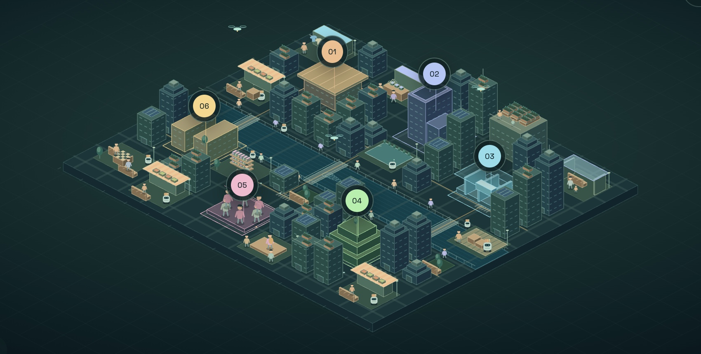
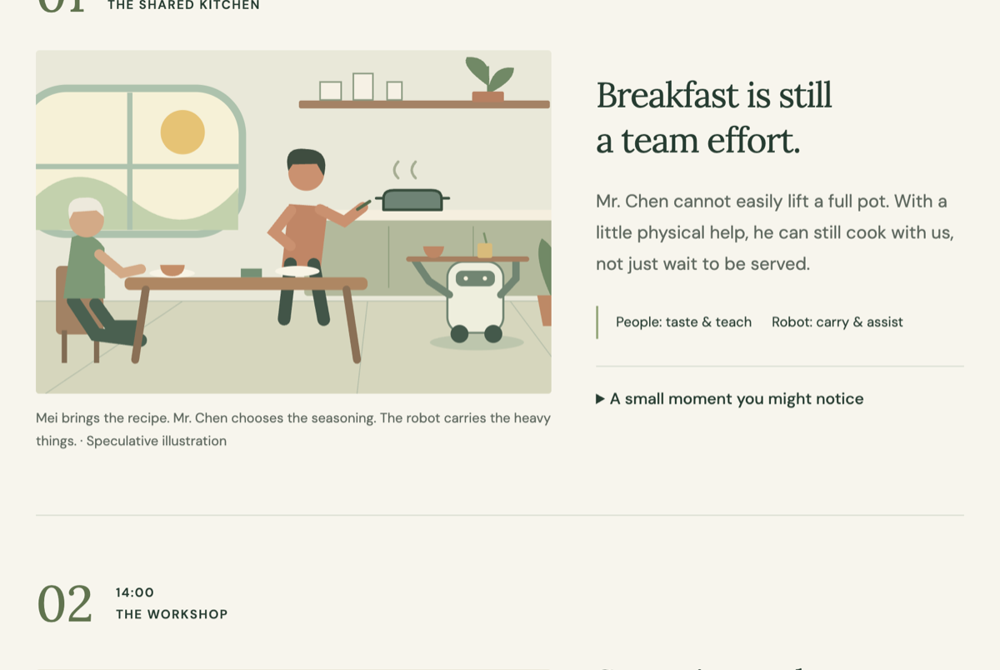
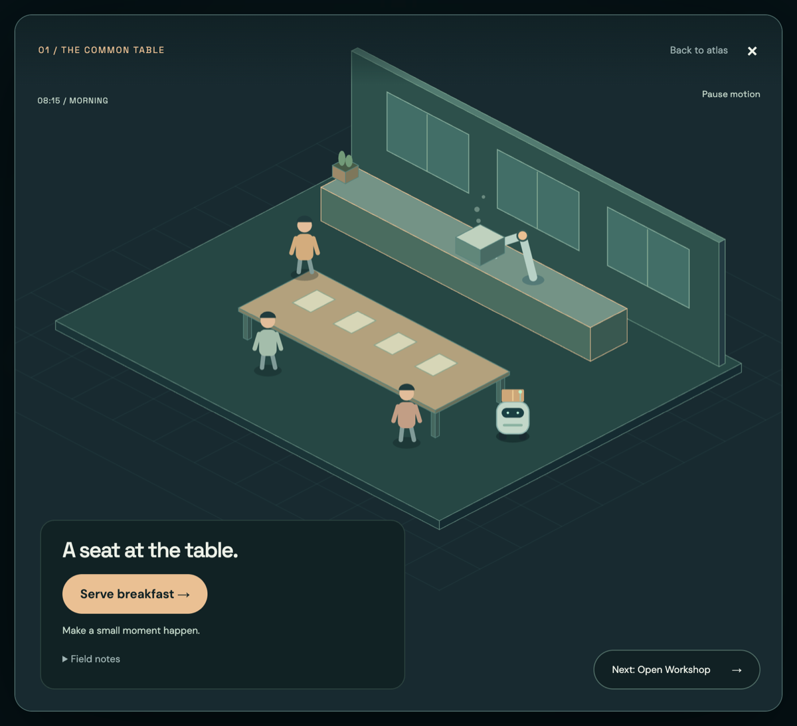
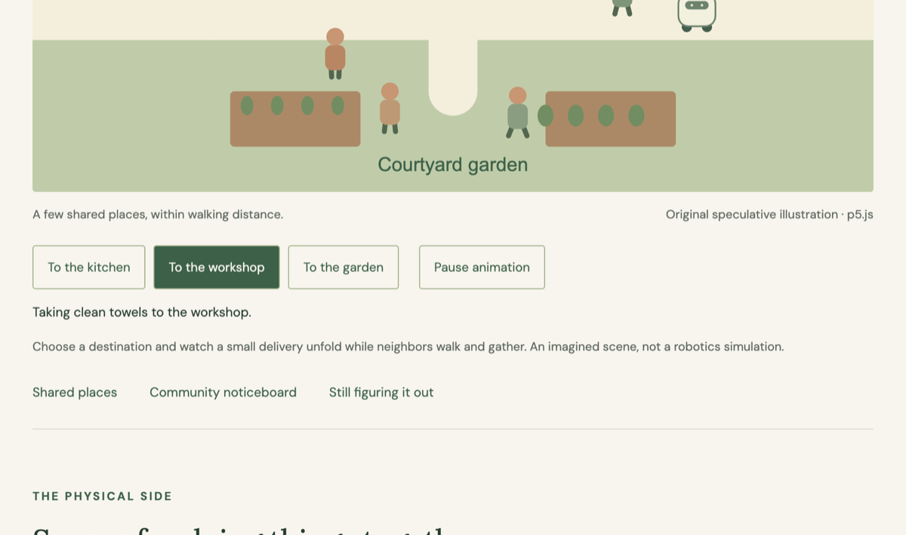

I started with a few ordinary things I wanted more of in the future: time with friends, shared meals, and the freedom to walk or bike when I could. Putting those details next to the larger questions about memory and machines made the page feel more like a note to my future self. The meal is the detail I came back to for A2. It gave me a concrete way to ask who gets to participate in a shared activity.
The first page was an HTML and CSS exercise. I grouped the written responses with headings and articles, paired each photograph and its credit in a figure, and linked the introduction to the reflections farther down the same page. The image captions could carry some of the meaning without adding another paragraph to each section.
A1 · Community Field Research
I spoke with my grandmother, my younger cousin, and my mother about internet use in Taicang, Suzhou. Fiber broadband is available where they live, and they use home Wi-Fi as well as mobile data. None currently uses dial-up. That tells me something about their connection options, but the interviews told me more about what actually mattered when they went online.
My grandmother remembered younger family members using computers before she got a smartphone. Now she mainly uses WeChat to talk to family. Small text or a menu that moves after an update can mean asking someone for help. My cousin has always had internet at home and notices the connection most when a game slows down.
My mother switches between Wi-Fi and mobile data for errands, payments, and navigation. I’d thought of going online as an activity in itself. For her, it’s often just part of buying something or getting somewhere.
A software developer I spoke with described using the web to read documentation, share code, and work with colleagues. He also pointed out that a site can work on a developer’s computer and still be hard to use on someone else’s. I recognized how often I assume a recent device, a fast connection, and comfort reading English. A large download feels different on limited mobile data. If the only copy of an instruction is inside a picture, a screen reader may have no equivalent text to read.
Instructor feedback
There is never a default answer to accessibility design; time and testing effort are key to finding a solution.
Dingyi Xu · Canvas feedback, November 18, 2026
For my own site, I’d start by asking someone unfamiliar with the atlas to open a scene on a phone without coaching. I’d see whether they can read the controls and find the same scene through Places without relying on the map. Those checks would tell me where to spend time before I change the design.
Weeks 2–3
A2 · Common Ground
Common Ground is the version I chose for my Future Telling assignment and shared with the class. I replaced the three-page draft with an interactive map because I wanted people to choose where to start. The kitchen is now one of six places. Visitors can go straight to the rooftop garden, the workshop, or the care courtyard and piece together the story in their own order.

Common Ground · Final A2 map. Six numbered landmarks mark different ways into the city, from the shared kitchen to the care courtyard.
In Living Together, the earlier prototype, visitors followed a day in the neighborhood from breakfast to the workshop. The kitchen showed a small division of work: a robot could lift a heavy pot while a resident still chose the recipe and decided how the food should taste. The map kept that idea. It gave visitors more choice, but it also made the reason for the robot’s help easier to miss.

Living Together · Breakfast opens the day. The text beside the illustration explains why Mr. Chen needs help lifting the pot.

Common Ground · The kitchen opens from the map. Serving breakfast is visible right away. The explanation sits under Field notes.
p5.js draws the map and the illustrations. city-data.js holds the scene text and coordinates. When a visitor chooses a landmark, the page opens an HTML dialog with an action and expandable field notes. The Places menu gives visitors a second route to each scene. The map supports keyboard pan and zoom, and the operating system’s reduced-motion preference starts ambient animation paused.
p5.js · Sending the robot to the workshop
In the early prototype, To the workshop is an HTML button. Clicking it changes the robot’s route to a short list of points along the walkway. The p5.js draw() loop moves the robot toward the next point, then removes that point from the route when it arrives.

Browser check of the early prototype. Selecting the workshop highlights the button and shows the delivery status while the robot moves.
One line in community-sketch.js explains the movement: const step = 80 * dt;. The sketch converts the time since the last frame to seconds, so the robot moves by elapsed time instead of taking the same step on every frame. The canvas shows where it is going. The status line tells you what it is carrying without asking you to read the animation.
Class presentation and feedback
I showed Common Ground to the whole class. The discussion gave me ideas I hadn’t considered and pointed out a problem in the map I already had.
Go beyond the city. Someone asked what the suburbs and countryside might look like. I’d only drawn everyday life in a city. Adding farmland and a village would let me think about what people and robots might do together somewhere with more open space.
Give places their own sounds. A classmate suggested adding sound. I’d like to try hearing more of a place as you zoom in: traffic near a road, running water by the river, or a boat horn at the waterfront.
Check how people and buildings overlap. During the presentation, a classmate pointed out that a house covered a person where the person should have been visible. It might be a drawing-order issue. I’d first go back to the same spot and check what the map draws in front as the person moves past the house.
Peer reviews
One written review singled out the kitchen but pointed out that visitors might miss the project’s premise if they never open About or Field notes. Another suggestion from class was to show a task from a worker robot’s point of view. To see where more context would help, I’d ask a first-time visitor to open one scene and tell me what the robot does there. I’d note whether they use the map or Places, and whether they find Field notes on their own.
Reviewing other projects gave me two examples of why that matters. In Botclub, clicking Mochi’s avatar opened Nova’s profile. In The Soft Escape, a pond rippled when clicked, but the hint was easy to miss.
Designing with AI
My first attempt with a broad AI prompt gave me a polished page with a familiar layout and a lot of text. I could read about the future, but there was very little to do. The page looked finished before I’d figured out what I wanted visitors to experience.
I came up with Common Ground as a city you could explore. I chose the map format and decided that each place should show something people and robots might do together. Then I directed the work with an AI coding assistant to turn that idea into a website. One example is the kitchen. I wanted visitors to be able to serve breakfast and see the scene change before they opened the notes. Once I had a specific interaction in mind, I could judge whether the code supported the experience I wanted.
For this log, I wanted the final city to come first. The initial selection of images focused on earlier versions, so I asked to put a browser screenshot of the finished map at the top of the A2 entry. That way readers can see what I made before following the changes that led to it.
Week 4 · November 20, 2026
Midterm progress review
Common Ground is now the version I’m presenting. The six landmarks give visitors several ways in, but the class feedback made me wonder how much of the story they pick up on their own. My next check is to watch someone open the kitchen without instructions and see what they understand before opening Field notes.
The building that covered a person during the presentation is still an open issue. I have the observation and a possible explanation about the drawing order. The next step is to reproduce the overlap at the same location before changing the code.
Sources and credits
Common Ground uses p5.js. Project files: Week 1 and A2. The image credits identify the Week 1 photographs and the speculative illustrations from the early A2 prototype. The A2 reflection describes the project and records coding assistance.
The Class Log draws on my field research, project decisions, and classroom reflections. I directed what to include and how to present it. I used ChatGPT for help organizing and wording the log and browser feedback, assembling the page, and capturing screenshots.